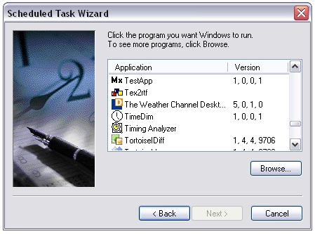
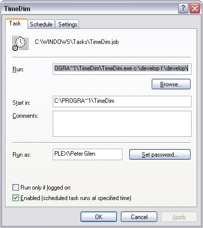

Introduction to automated backups The TimeDim Copy Machine can be used to automate backups. It will accept command line parameters to be used in a Windows Scheduler session. This frees the user to execute mundane tasks by hand, and assures that backups actually happen, and happen at the correct time. The added effort in seting upo the scheduler pays strong dividents in terms of data safety, convenience and effortless computing. Introducing the Windows Scheduler One can open the Windows sceduler from in control panel. Goto 'Start' -> 'Control Panel' and then click 'Scheduled Tasks' and click on 'Add Scheduled Tasks'
Running an automated backup The Windows scheduler gives you powers to run an arbitrary program at a specified time. After clicking on the 'Add Sceduled Task' icon, a wizard pops up. The wizard will scan all the availble programs, and display a list of them. At this time, select 'TimeDim', and click 'next'. 
Automated sessionsThe wizard continues to ask for
timing details for the program to run. Naturally, you are free to elect
any timing details, we recommend 'daily' schedules, running at the
early hours (we set it to 4.00 AM). The wizard then asks for user
account details to authenticate your request.
Once the wizard completes, open up the 'Properties' window, and edit the command line (next to the 'Run' header). Add the source and target directory to the command line. In the example below, we back up the 'c:\develop' directory to 'f:\develop' directory. 
Finally, right click on the
newly created sceduler icon, and click on 'Run' to test the new
scheduled item. TimeDim should start and pre-load the directory presets
from the command line. TimeDim will pause for five seconds to
allow you to abort the automated session. If you wish, you can stop the
session from execute at this test session.
Congratulations, you have successfully set up your automated TimeDim session. T.O.C.
(manual's table of contets)
|
|||||
|
TimeDim
Copyright by (C) 2007, Written
by Peter Glen
|
 TimeDim
With the Scheduler
TimeDim
With the Scheduler